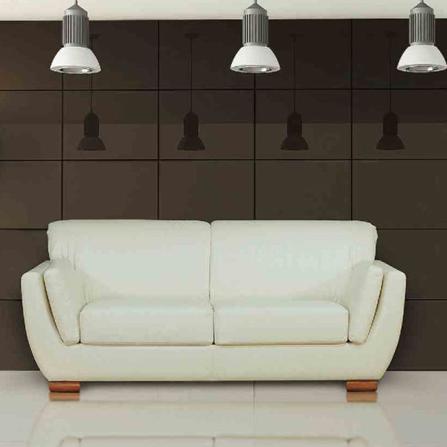

Sillon Asia
SOFÁ 2c. Mod. «ASIA» Largo: 170 cm. Profundidad: 80 cm. Alto: 88 cm. Asia es la fusión de un clásico y moderno. Es un modelo pensado para toda esa gente jóven de espíritu.
Sillon Golden
Sofá 3c.: L210 P96 H104 cm. Golden adquiere formas rectas con un diseño atemporal, que fusiona modernidad con un toque de tradición

Sillon aloha
Sofá 3c.: L219 P88 H84 cm. Sofá 2c.: L187 P88 H84 cm. Sillón: L115 P83 H84 cm. Representa el equilibrio perfecto entre el diseño y la comodidad. Disfrutarás al máximo de los momentos de relax en cualquier ocasión.